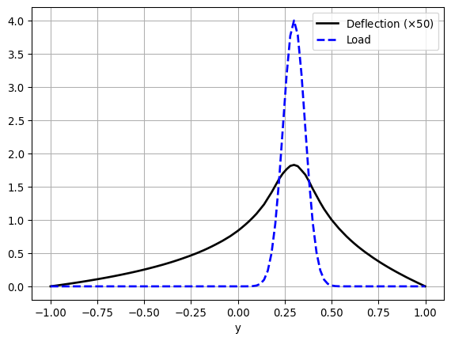

import dolfinx
print(f'DOLFINx version: {dolfinx.__version__}')DOLFINx version: 0.9.0\(~\)
Dedalus solves differential equations using spectral methods. It’s open-source, written in Python, and MPI-parallelized

\(~\)
FEniCS is a popular open-source computing platform for solving partial differential equations (PDEs) with the finite element method (FEM). FEniCS enables users to quickly translate scientific models into efficient finite element code. With the high-level Python and C++ interfaces to FEniCS, it is easy to get started, but FEniCS offers also powerful capabilities for more experienced programmers. FEniCS runs on a multitude of platforms ranging from laptops to high-performance computers

The latest stable release of FEniCSx is version 0.9, which was released in October 2024. The easiest way to start using FEniCSx on MacOS and other systems is to install it using conda:
$ conda create -n fenicsx
$ conda activate fenicsx
$ conda install -c conda-forge fenics-dolfinx mpich pyvista petsc petsc4py
$ conda install ipykernel
$ python -m ipykernel install --user --name fenicsx --display-name "FEniCSx"\(~\)
import dolfinx
print(f'DOLFINx version: {dolfinx.__version__}')DOLFINx version: 0.9.0\(~\)
The FEniCS Project is a research and software initiative focused on developing mathematical methods and software for solving partial differential equations (PDEs). Its goal is to provide intuitive, efficient, and flexible tools for scientific computing. Launched in 2003, the project is the result of collaboration among researchers from universities and research institutes worldwide. For the latest updates and more information, visit the FEniCS Project
The latest version of the FEniCS project, FEniCSx, consists of several building blocks, namely DOLFINx, UFL, FFCx, and Basix. We will now go through the main objectives of each of these building blocks
DOLFINx is the high performance C++ backend of FEniCSx, where structures such as meshes, function spaces and functions are implemented. Additionally, DOLFINx also contains compute intensive functions such as finite element assembly and mesh refinement algorithms. It also provides an interface to linear algebra solvers and data-structures, such as PETScUFL is a high-level form language for describing variational formulations with a high-level mathematical syntaxFFCx is the form compiler of FEniCSx; given variational formulations written with UFL, it generates efficient C codeBasix is the finite element backend of FEniCSx, responsible for generating finite element basis functionsThe goal of this tutorial is to demonstrate how to apply the finite element to solve PDEs using FEniCS. Through a series of examples, we will demonstrate how to:
Solve linear PDEs (such as the Poisson equation)
Solve time-dependent PDEs (such as the heat equation)
Solve non-linear PDEs
Solve systems of time-dependent non-linear PDEs
Important topics include: how to set boundary conditions of various types (Dirichlet, Neumann, Robin), how to create meshes, how to define variable coefficients, how to interact with linear and non-linear solvers, and how to post-process and visualize solutions
Authors: Hans Petter Langtangen, Anders Logg, Jørgen S. Dokken
The goal of this section is to solve one of the most basic PDEs, the Poisson equation, with a few lines of code in FEniCSx. We start by introducing some fundamental FEniCSx objects, such as Function, functionspace, TrialFunction and TestFunction, and learn how to write a basic PDE solver. This will include:
How to formulate a mathematical variational problem
How to apply boundary conditions
How to solve the discrete linear system
How to visualize the solution
The Poisson equation is the following boundary-value problem
\[\begin{aligned} -\nabla^2 u(\mathbf{x}) &= f(\mathbf{x})&&\mathbf{x} \in \Omega\\ u(\mathbf{x}) &= u_D(\mathbf{x})&& \mathbf{x} \in \partial\Omega \end{aligned}\]Here, \(u=u(\mathbf{x})\) is the unknown function, \(f=f(\mathbf{x})\) a prescribed function, the Laplace operator (often written as \(\Delta\)), \(\Omega\) the spatial domain, and \(\partial\Omega\) the boundary of \(\Omega\). The Poisson problem, including both the PDE, \(-\nabla^2 u = f\), and the boundary condition, \(u=u_D\) on \(\partial\Omega\), is an example of a boundary-value problem, which must be precisely stated before we can start solving it numerically with FEniCSx
\[-\frac{\partial^2 u}{\partial x^2} - \frac{\partial^2 u}{\partial y^2} = f(x,y)\]
The unknown \(u\) is now a function of two variables, \(u=u(x,y)\), defined over the two-dimensional domain \(\Omega\)
Solving a boundary value problem in FEniCSx consists of the following steps:
FEniCSxAs we have already covered step 1, we shall now cover steps 2-4
FEniCSx is based on the finite element method, which is a general and efficient mathematical technique for the numerical solution of PDEs. The starting point for finite element methods is a PDE expressed in variational form
The basic recipe for turning a PDE into a variational problem is:
The function \(v\) which multiplies the PDE is called a test function. The unknown function \(u\) that is to be approximated is referred to as a trial function. The terms trial and test functions are used in FEniCSx too. The test and trial functions belong to certain function spaces that specify the properties of the functions
In the present case, we multiply the Poisson equation by a test function \(v\) and integrate over \(\Omega\):
\[\int_\Omega (-\nabla^2 u) v~\mathrm{d} x = \int_\Omega f v~\mathrm{d} x\]
Here \(\mathrm{d} x\) denotes the differential element for integration over the domain \(\Omega\). We will later let \(\mathrm{d} s\) denote the differential element for integration over \(\partial\Omega\), the boundary of \(\Omega\)
A rule of thumb when deriving variational formulations is that one tries to keep the order of derivatives of \(u\) and \(v\) as small as possible. Here, we have a second-order differential of \(u\), which can be transformed to a first derivative by employing the technique of integration by parts. The formula reads
\[-\int_\Omega (\nabla^2 u)v~\mathrm{d}x = \int_\Omega\nabla u\cdot\nabla v~\mathrm{d}x- \int_{\partial\Omega}\frac{\partial u}{\partial n}v~\mathrm{d}s\]
where \(\frac{\partial u}{\partial n}=\nabla u \cdot \vec{n}\) is the derivative of \(u\) in the outward normal direction \(\vec{n}\) on the boundary
Another feature of variational formulations is that the test function \(v\) is required to vanish on the parts of the boundary where the solution \(u\) is known
In the present problem, this means that \(v\) is \(0\) on the whole boundary \(\partial\Omega\). Thus, the second term in the integration by parts formula vanishes, and we have that
\[\int_\Omega \nabla u \cdot \nabla v~\mathrm{d} x = \int_\Omega f v~\mathrm{d} x\]
\(~\)
If we require that this equation holds for all test functions \(v\) in some suitable space \(\hat{V}\), the so-called test space, we obtain a well-defined mathematical problem that uniquely determines the solution \(u\) which lies in some function space \(V\). Note that \(V\) does not have to be the same space as \(\hat{V}\). We call the space \(V\) the trial space. We refer to the equation above as the weak form/variational form of the original boundary-value problem. We now properly state our variational problem: Find \(u\in V\) such that
\[\int_\Omega \nabla u \cdot \nabla v~\mathrm{d} x = \int_\Omega f v~\mathrm{d} x\qquad \forall v \in \hat{V}\]
For the present problem, the trial and test spaces \(V\) and \(\hat{V}\) are defined as
\[\begin{aligned} V&=\{v\in H^1(\Omega) \,\vert\, v=u_D&\text{on } \partial \Omega \}\\ \hat{V}&=\{v\in H^1(\Omega) \,\vert\, v=0 &\text{on } \partial \Omega \} \end{aligned}\]In short, \(H^1(\Omega)\) is the Sobolev space containing functions \(v\) such that \(v^2\) and \(\vert \nabla v \vert ^2\) have finite integrals over \(\Omega\). The solution of the underlying PDE must lie in a function space where the derivatives are also continuous, but the Sobolev space \(H^1(\Omega)\) allows functions with discontinuous derivatives. This weaker continuity requirement in our weak formulation (caused by the integration by parts) is of great importance when it comes to constructing the finite element function space. In particular, it allows the use of piecewise polynomial function spaces. This means that the function spaces are constructed by stitching together polynomial functions on simple domains such as intervals, triangles, quadrilaterals, tetrahedra and hexahedra
The variational problem is a continuous problem: it defines the solution \(u\) in the infinite-dimensional function space \(V\). The finite element method for the Poisson equation finds an approximate solution of the variational problem by replacing the infinite-dimensional function spaces \(V\) and \(\hat{V}\) by discrete (finite dimensional) trial and test spaces \(V_h\subset V\) and \(\hat{V}_h \subset \hat{V}\). The discrete variational problem reads: Find \(u_h\in V_h\) such that
\[ \begin{aligned} \int_\Omega \nabla u_h \cdot \nabla v~\mathrm{d} x &= \int_\Omega fv~\mathrm{d} x && \forall v \in \hat{V}_h. \end{aligned} \]
This variational problem, together with suitable definitions of \(V_h\) and \(\hat{V}_h\), uniquely define our approximate numerical solution of the Poisson equation. Note that the boundary condition is encoded as part of the test and trial spaces. This might seem complicated at first glance, but means that the finite element variational problem and the continuous variational problem look the same
We will introduce the following notation for variational problems: Find \(u\in V\) such that
\[\begin{aligned} a(u,v)&=L(v)&& \forall v \in \hat{V} \end{aligned}\]
For the Poisson equation, we have:
\[\begin{aligned} a(u,v) &= \int_{\Omega} \nabla u \cdot \nabla v~\mathrm{d} x,\\ L(v) &= \int_{\Omega} fv~\mathrm{d} x \end{aligned}\]
In the literature \(a(u,v)\) is known as the bilinear form and \(L(v)\) as a linear form. For every linear problem, we will identify all terms with the unknown \(u\) and collect them in \(a(u,v)\), and collect all terms with only known functions in \(L(v)\).
To solve a linear PDE in FEniCSx, such as the Poisson equation, a user thus needs to perform two steps:
In this section, you will learn:
DOLFINxUp to this point, we’ve looked at the Poisson problem in very general terms: the domain \(\Omega\), the boundary condition \(u_D\), and the right-hand side \(f\) were all left unspecified. To actually solve something, we now need to pick concrete choices for \(\Omega\), \(u_D\), and \(f\)
A good strategy is to set up the problem in a way that we already know the exact solution. That way, we can easily check whether our numerical solution is correct. Polynomials of low degree are usually the best choice here, because continuous Galerkin finite element spaces of degree \(r\) can reproduce any polynomial of degree \(r\) exactly
To test our solver, we’ll construct a problem where we already know the exact solution. This approach is known as the method of manufactured solutions. The idea is simple:
Step 1: Choosing the exact solution
Let’s take a quadratic function in 2D:
\[ u_e(x,y) = 1 + x^2 + 2y^2 \]
Step 2: Computing the source term
If we insert \(u_e\) into the Poisson equation, we obtain
\[f(x,y) = -6, \;\; u_D(x,y) = u_e(x,y) = 1 + x^2 + 2y^2\]
Notice that this holds regardless of the domain shape, as long as we prescribe \(u_e\) on the boundary
Step 3: Choosing the domain
For simplicity, let’s use the unit square:
\[\Omega = [0,1] \times [0,1]\]
Step 4: Summary
This small example illustrates a very powerful strategy:
This workflow is at the heart of the method of manufactured solutions, and it provides a simple but rigorous way to validate our solver
Generating simple meshes
The next step is to define the discrete domain, called the mesh. We do this using one of FEniCSx’s built-in mesh generators
Here, we create a unit square mesh spanning \([0,1]\times[0,1]\). The cells of the mesh can be either triangles or quadrilaterals:
import numpy as np
from mpi4py import MPI
from dolfinx import mesh
domain = mesh.create_unit_square(MPI.COMM_WORLD, 8, 8, mesh.CellType.quadrilateral)Notice that we need to provide an MPI communicator. This determines how the program behaves in parallel:
MPI.COMM_WORLD, a single mesh is created and distributed across the number of processors we specify. For example, to run the program on two processors, we can use:$ mpirun -n 2 python tutorial_01.pyMPI.COMM_SELF, each processor will create its own independent copy of the mesh. This can be useful when running many small problems in parallel, for example when sweeping over different parametersDefining the finite element function space
Once the mesh is created, the next step is to define the finite element function space \(V\). DOLFINx supports a wide variety of finite element spaces of arbitrary order. For a full overview, see the list of Supported elements in DOLFINx
When creating a function space, we need to specify: 1. The mesh on which the space is defined 2. The element family (e.g., Lagrange, Raviart–Thomas, etc.) 3. The polynomial degree of the element
In DOLFINx, this can be done by passing a tuple of the form ("family", degree), as shown below:
from dolfinx.fem import functionspace
V = functionspace(domain, ("Lagrange", 1))The next step is to create a function that stores the Dirichlet boundary condition. We then use interpolation to fill this function with the prescribed values
from dolfinx import fem
uD = fem.Function(V)
uD.interpolate(lambda x: 1 +x[0]**2 +2 *x[1]**2)Now that we have defined the boundary data (which, in this case, is also the exact solution of our finite element problem), we need to enforce it on the boundary of the mesh.
The first step is to identify which parts of the mesh correspond to the outer boundary. In DOLFINx, the boundary is represented by facets (that is, the line segments making up the outer edges in 2D or surfaces in 3D).
We can extract the indices of all exterior facets using:
tdim = domain.topology.dim
fdim = tdim -1
domain.topology.create_connectivity(fdim, tdim)
boundary_facets = mesh.exterior_facet_indices(domain.topology)This gives us the set of facets lying on the boundary of our discrete domain. Once we know where the boundary is, we can proceed to apply the Dirichlet boundary conditions to all degrees of freedom (DoFs) located on these facets
For our current problem, we are using the “Lagrange” degree-1 function space. In this case, the degrees of freedom (DoFs) are located at the vertices of each cell, so every boundary facet contains exactly two DoFs
To identify the local indices of these boundary DoFs, we use dolfinx.fem.locate_dofs_topological. This function takes three arguments:
Once we have the boundary DoFs, we can create the Dirichlet boundary condition as follows:
boundary_dofs = fem.locate_dofs_topological(V, fdim, boundary_facets)
bc = fem.dirichletbc(uD, boundary_dofs)Defining the trial and test function
In mathematics, we usually distinguish between the trial space \(V\) and the test space \(\hat{V}\). For the present problem, the only difference between the two would be the treatment of boundary conditions
In FEniCSx, however, boundary conditions are not built directly into the function space. This means we can simply use the same space for both the trial and test functions
To express the variational formulation, we make use of the Unified Form Language (UFL)
import ufl
u = ufl.TrialFunction(V)
v = ufl.TestFunction(V)Defining the source term
Since the source term is constant throughout the domain, we can represent it using dolfinx.fem.Constant:
from dolfinx import default_scalar_type
f = fem.Constant(domain, default_scalar_type(-6))While we could simply define the source term as f = -6, this has a limitation: if we later want to change its value, we would need to redefine the entire variational problem. By using dolfinx.fem.Constant, we can easily update the value during the simulation, for example with f.value = 5
Another advantage is performance: declaring f as a constant allows the compiler to optimize the variational formulation, leading to faster assembly of the resulting linear system
Defining the variational problem
Now that we have defined all the components of our variational problem, we can write down the weak formulation:
a = ufl.dot(ufl.grad(u), ufl.grad(v)) *ufl.dx
L = f *v *ufl.dxNotice how closely the Python syntax mirrors the mathematical expressions:
\[a(u,v) = \int_{\Omega} \nabla u \cdot \nabla v \,\mathrm{d}x, \;\; L(v) = \int_{\Omega} f v \,\mathrm{d}x\]
Here, ufl.dx represents integration over the domain \(\Omega\), i.e. over all cells of the mesh. This illustrates one of the major strengths of FEniCSx: variational formulations can be written in Python in a way that almost directly matches their mathematical form, making it both natural and convenient to specify and solve complex PDE problems
Expressing inner products
The inner product
\[\int_\Omega \nabla u \cdot \nabla v \,\mathrm{d}x\]
can be expressed in different ways in UFL. In our example, we wrote it as: ufl.dot(ufl.grad(u), ufl.grad(v)) *ufl.dx. In UFL, the dot operator performs a contraction: it sums over the last index of the first argument and the first index of the second argument. Since both \(\nabla u\) and \(\nabla v\) are rank-1 tensors (vectors), this reduces to a simple dot product.
For higher-rank tensors, such as matrices (rank-2 tensors), the appropriate operator is ufl.inner, which computes the full Frobenius inner product. For vectors, however, ufl.dot and ufl.inner are equivalent
Forming and solving the linear system
Having defined the finite element variational problem and boundary conditions, we can now create a dolfinx.fem.petsc.LinearProblem. This class provides a convenient interface for solving
the variational problem:
Find \(u_h\in V\) such that \(a(u_h, v)=L(v), \;\; \forall v \in \hat{V}\)
In this example, We will use PETSc as the linear algebra backend, together with a direct solver (LU factorization)
For more details on Krylov solvers and preconditioners, see the PETSc-documentation. Note that PETSc is not a required dependency of DOLFINx, so we explicitly import the DOLFINx wrapper to interface with PETSc. Finally, to ensure that the solver options passed to the LinearProblem apply only to this specific KSP solver, we assign a unique option prefix
from dolfinx.fem.petsc import LinearProblem
problem = LinearProblem(
a, L, bcs=[bc],
petsc_options={
# Direct solver using LU factorization
"ksp_type": "preonly",
"pc_type": "lu"
}
)
# Solve the system
uh = problem.solve()
# Optionally, view solver information
#ksp = problem.solver
#ksp.view()Using problem.solve(), we solve the linear system of equations and return a dolfinx.fem.Function containing the solution
Computing the error
Finally, we want to compute the error to check the accuracy of the solution. We do this by comparing the finite element solution uh with the exact solution. We do this by interpolating the exact solution into the the \(P_2\)-function space
V2 = fem.functionspace(domain, ("Lagrange", 2))
uex = fem.Function(V2)
uex.interpolate(lambda x: 1 +x[0]**2 +2 *x[1]**2)We compute the error in two different ways. First, we compute the \(L^2\) norm of the error, defined by
\[E=\sqrt{\int_\Omega (u_D-u_h)^2 \,\mathrm{d} x}\]
We use UFL to express the \(L^2\) error, and use dolfinx.fem.assemble_scalar to compute the scalar value. In DOLFINx, assemble_scalar only assembles over the cells on the local process. This means that if we use 2 processes to solve our problem, we need to gather the solution to one. We can do this with the MPI.allreduce function
L2_error = fem.form(ufl.inner(uh -uex, uh -uex) *ufl.dx)
error_local = fem.assemble_scalar(L2_error)
error_L2 = np.sqrt(domain.comm.allreduce(error_local, op=MPI.SUM))Secondly, we compute the maximum error at any degree of freedom (dof). The finite element solution uh can be expressed as a linear combination of the basis functions \(\phi_j\) spanning the space \(V\):
\[u = \sum_{j=1}^N U_j \phi_j\]
When we call problem.solve(), we obtain all coefficients \(U_1\), \(\dots\), \(U_N\). These coefficients are the degrees of freedom (dofs). We can access the dofs by retrieving the underlying vector from uh
However, note that a second-order function space contains more dofs than a first-order space, so the corresponding arrays cannot be compared directly. Fortunately, since we have already interpolated the exact solution into the first-order space when defining the boundary condition, we can compare the maximum values at the dofs of the approximation space
error_max = np.max(np.abs(uD.x.array -uh.x.array))
# Only print the error on one process
if domain.comm.rank == 0:
print(f"Error_L2 : {error_L2:.2e}")
print(f"Error_max : {error_max:.2e}")Error_L2 : 8.24e-03
Error_max : 5.33e-15Plotting the mesh using pyvista
We will visualize the mesh using pyvista, a Python interface to the VTK toolkit. To begin, We convert the mesh into a format compatible with pyvista using the function dolfinx.plot.vtk_mesh. The first step is to create an unstructured grid that pyvista can work with
You can check the current plotting backend with:
import pyvista
from dolfinx import plot
domain.topology.create_connectivity(tdim, tdim)
topology, cell_types, geometry = plot.vtk_mesh(domain, tdim)
grid = pyvista.UnstructuredGrid(topology, cell_types, geometry)PyVista supports several backends, each with its own advantages and limitations. For more information and installation instructions, see the pyvista documentation
We can now use the pyvista.Plotter to visualize the mesh. We will show it both as a 2D and as a 3D warped representation.
In the jupyter notebook, we use the default setting pyvista.OFF_SCREEN=False, which will renders the plots directly within the notebook
from pathlib import Path
results_folder = Path("fenicsx/fundamentals")
results_folder.mkdir(exist_ok=True, parents=True)
plotter = pyvista.Plotter(off_screen=True)
plotter.add_mesh(grid, show_edges=True)
plotter.add_axes()
plotter.view_xy()
# if not pyvista.OFF_SCREEN:
# plotter.show()
# HTML 저장
plotter.export_html("fenicsx/fundamentals/unit_square_mesh.html")Plotting a function using pyvista
We want to plot the solution uh. Since the function space used to define uh is disconnected from the one used to define the mesh, we first create a mesh based on the DOF coordinates of the function space V. We then use dolfinx.plot.vtk_mesh, passing the function space as input, to generate a mesh whose geometry is based on these DOF coordinates
u_topology, u_cell_types, u_geometry = plot.vtk_mesh(V)Next, we create the pyvista.UnstructuredGrid and add the DOF-values to the mesh
u_grid = pyvista.UnstructuredGrid(u_topology, u_cell_types, u_geometry)
u_grid.point_data["u"] = uh.x.array.real
u_grid.set_active_scalars("u")
u_plotter = pyvista.Plotter(off_screen=True)
u_plotter.add_mesh(
u_grid,
show_edges=True,
scalar_bar_args={
"title": "u",
"fmt": "%.1f",
"color": "black",
"label_font_size": 12,
# "vertical": True,
"n_labels": 10,
},
)
u_plotter.add_axes()
u_plotter.view_xy()
# if not pyvista.OFF_SCREEN:
# u_plotter.show()
# HTML 저장
u_plotter.export_html("fenicsx/fundamentals/poisson_solution_2D.html")We can also warp the mesh by scalar to make use of the 3D plotting
warped = u_grid.warp_by_scalar()
u_plotter2 = pyvista.Plotter(off_screen=True)
u_plotter2.add_mesh(
warped,
show_edges=True,
scalar_bar_args={
"title": "u",
"fmt": "%.1f",
"color": "black",
"label_font_size": 12,
#"vertical": True,
"n_labels": 10,
},
show_scalar_bar=True)
u_plotter2.add_axes()
#if not pyvista.OFF_SCREEN:
# u_plotter2.show()
# HTML 저장
u_plotter2.export_html("fenicsx/fundamentals/poisson_solution_3D.html")External post-processing
For post-processing outside of Python, it is recommended to save the solution to a file using either dolfinx.io.VTXWriter or dolfinx.io.XDMFFile, and then visualize it in ParaView. This approach is particularly useful for 3D visualization
from dolfinx import io
filename = results_folder / "poisson"
with io.VTXWriter(domain.comm, filename.with_suffix(".bp"), [uh]) as vtx:
vtx.write(0.0)
with io.XDMFFile(domain.comm, filename.with_suffix(".xdmf"), "w") as xdmf:
xdmf.write_mesh(domain)
xdmf.write_function(uh)Authors: Hans Petter Langtangen, Anders Logg, Jørgen S. Dokken
In the first FEniCSx example, we solved a simple problem that allowed us to easily verify the implementation. In this section, we shift our focus to a more physically relevant problem, one that produces solutions with a more interesting structure
Specifically, we aim to compute the deflection \(D(x,y)\) of a two-dimensional circular membrane of radius \(R\), subjected to a load distribution \(p(x,y)\). The governing PDE model is
\[ \begin{aligned} -T \nabla^2D&=p \quad\text{in }\; \Omega=\{(x,y)\,\vert\, x^2+y^2\leq R^2 \} \end{aligned} \]
Here, \(T\) is the tension in the membrane (constant), and \(p\) is the external pressure load. The boundary of the membrane has no deflection. This implies that \(D=0\) is the boundary condition. We model a localized load as a Gaussian function:
\[ \begin{aligned} p(x,y)&=\frac{A}{2\pi\sigma}e^{-\frac{1}{2}\left[\left(\frac{x-x_0}{\sigma}\right)^2 +\left(\frac{y-y_0}{\sigma}\right)^2\right]} \end{aligned} \]
The parameter \(A\) is the amplitude of the pressure, \((x_0, y_0)\) the location of the maximum point of the load, and \(\sigma\) the “width” of \(p\). We will take the center \((x_0,y_0)\) to be \((0,R_0)\) for some \(0<R_0<R\) Then we have
\[ \begin{aligned} p(x,y)&=\frac{A}{2\pi\sigma}e^{-\frac{1}{2}\left[\left(\frac{x}{\sigma}\right)^2 +\left(\frac{y-R_0}{\sigma}\right)^2\right]} \end{aligned} \]
There are many physical parameters in this problem, and we can benefit from grouping them by means of scaling. Let us introduce dimensionless coordinates \(\bar{x}=\frac{x}{R}\), \(\bar{y}=\frac{y}{R}\), and a dimensionless deflection \(w=\frac{D}{D_e}\), where \(D_e\) is a characteristic size of the deflection. Introducing \(\bar{R}_0=\frac{R_0}{R}\), we obtain
\[ \begin{aligned} -\frac{\partial^2 w}{\partial \bar{x}^2} -\frac{\partial^2 w}{\partial \bar{y}^2} &=\frac{R^2A}{2\pi\sigma TD_e}e^{-\frac{R^2}{2\sigma^2}\left[\bar{x}^2+(\bar{y}-\bar{R}_0)^2\right]}\\ &=\alpha e^{-\beta^2 \left[\bar{x}^2+(\bar{y}-\bar{R}_0)^2\right]} \end{aligned} \]
for \(\bar{x}^2+\bar{y}^2<1\), where \(\alpha = \frac{R^2A}{2\pi\sigma TD_e}\) and \(\beta=\frac{R}{\sqrt{2}\sigma}\)
With an appropriate scaling, \(w\) and its derivatives are of order unity. Thus, the left-hand side of the scaled PDE is also of order unity, while the right hand side is characterized by the parameter \(\alpha\). This suggests selecting \(\alpha\) to be on the order of unity; in this particular case, we choose \(\alpha=4\). (It is also possible to derive the analytical solution in scaled coordinates and verify that the maximum deflection is \(D_e\) when \(\alpha = 4\), thereby determining \(D_e\))
With \(D_e=\frac{R^2A}{8\pi\sigma T}\) and omitting the bars, the scaled problem becomes
\[ \begin{aligned} -\nabla^2 w = 4e^{-\beta^2 \left[x^2+(y-R_0)^2\right]} \end{aligned} \]
to be solved over the unit disc, with \(w=0\) on the boundary
In this formulation, only two parameters remain: the dimensionless width of the pressure distribution, \(\beta\), and the location of the pressure peak, \(R_0 \in [0,1]\). As \(\beta \to 0\), the solution approaches the special case \(w = 1 - x^2 - y^2\)
Finally, given a computed scaled solution \(w\), the physical deflection is recovered as
\[ \begin{aligned} D=\frac{AR^2}{8\pi\sigma T}w \end{aligned} \]
Author: Jørgen S. Dokken
In this section, we will solve the deflection of the membrane problem. After finishing this section, you should be able to:
GMSH Python API and load it into DOLFINxufl.SpatialCoordinate to create a spatially varying functionufl.Expression into an appropriate function spacedolfinx.Function at any pointCreating the mesh
To create the computational geometry, we use the Python-API of GMSH. We start by importing the gmsh-module and initializing it
# $ conda install -c conda-forge python-gmsh
import gmsh
if not gmsh.isInitialized():
gmsh.initialize()The next step is to set up the membrane and start the computations using the Gmsh CAD kernel, which will generate the necessary data structures behind the scenes. When calling addDisk, the first three arguments give the \(x\), \(y\), and \(z\) coordinates of the circle’s center, while the last two specify the radii in the \(x\)- and \(y\)-directions
R = 1.0 # radius of the membrane
membrane = gmsh.model.occ.addDisk(0.0, 0.0, 0.0, R, R)
# Synchronize the CAD kernel with the model
gmsh.model.occ.synchronize()Next, we turn the membrane into a physical surface, so that Gmsh recognizes it when generating the mesh. Since a surface is a two-dimensional entity, we pass 2 as the first argument, the membrane’s entity tag as the second argument, and the physical tag as the last argument. In a later demo, we will explain exactly when and why this physical tag is important
gdim = 2
physical_tag = 1
# Remove any existing physical groups with the same (dim, tag)
for dim, tag in gmsh.model.getPhysicalGroups():
if dim == gdim and tag == physical_tag:
gmsh.model.removePhysicalGroups([(dim, tag)])
# Now safely add the new physical group
gmsh.model.addPhysicalGroup(gdim, [membrane], physical_tag)1Finally, we generate the two-dimensional mesh. We set a uniform mesh size by modifying the GMSH options
gmsh.option.setNumber("Mesh.CharacteristicLengthMin", 0.05)
gmsh.option.setNumber("Mesh.CharacteristicLengthMax", 0.05)
gmsh.model.mesh.generate(gdim)Info : Meshing 1D...
Info : [ 0%] Meshing curve 1 (Ellipse)
Info : [ 60%] Meshing curve 2 (Ellipse)
Info : Done meshing 1D (Wall 0.000644666s, CPU 0.001008s)
Info : Meshing 2D...
Info : [ 0%] Meshing surface 1 (Plane, Frontal-Delaunay)
Info : [ 60%] Meshing surface 2 (Plane, Frontal-Delaunay)
Info : Done meshing 2D (Wall 0.101196s, CPU 0.166369s)
Info : 3099 nodes 6196 elementsInterfacing with GMSH in DOLFINx
We will import the Gmsh-generated mesh directly into DOLFINx using the dolfinx.io.gmshio interface. In this example, we did not specify which process created the gmsh model, so a copy of the model has been created on each MPI process. However, we want to work with a single mesh distributed across all processes. To achieve this, we take the model generated on rank 0 of MPI.COMM_WORLD, and distribute it to all available ranks
This import will also provide two mesh tags: one for cells marked by physical groups and one for facets marked by physical groups. Since we did not add any physical groups of dimension gdim -1, facet_markers object will contain no entities
from mpi4py import MPI
from dolfinx.io import gmshio
from dolfinx.fem.petsc import LinearProblem
gmsh_model_rank = 0
mesh_comm = MPI.COMM_WORLD
domain, cell_markers, facet_markers = gmshio.model_to_mesh(
gmsh.model,
mesh_comm,
gmsh_model_rank,
gdim=gdim
)We define the function space as in the previous tutorial
from dolfinx import fem
V = fem.functionspace(domain, ("Lagrange", 1))import pyvista
from dolfinx.plot import vtk_mesh
# Extract topology from mesh and create pyvista mesh
topology, cell_types, x = vtk_mesh(V)
grid = pyvista.UnstructuredGrid(topology, cell_types, x)
plotter = pyvista.Plotter(off_screen=True)
plotter.add_mesh(grid, show_edges=True)
plotter.add_axes()
plotter.view_xy()
# if not pyvista.OFF_SCREEN:
# plotter.show()
# HTML 저장
plotter.export_html("fenicsx/fundamentals/membrane_mesh.html")Defining a spatially varying load
The right-hand side pressure function is defined using ufl.SpatialCoordinate together with two constants: one for \(\beta\) and one for \(R_0\)
from dolfinx import default_scalar_type
import ufl
x = ufl.SpatialCoordinate(domain)
beta = fem.Constant(domain, default_scalar_type(12))
R0 = fem.Constant(domain, default_scalar_type(0.3))
p = 4 *ufl.exp(-beta**2 *(x[0]**2 +(x[1] -R0)**2))Interpolation of a ufl expression
Since we defined the load p as a spatially varying function, we want to interpolate it into a suitable function space for visualization. For this, we use dolfinx.Expression, which can take any ufl expression along with a set of points on the reference element. In practice, we use the interpolation points of the target space. Because p varies rapidly in space, we choose a high-order function space to represent it
Q = fem.functionspace(domain, ("Lagrange", 5))
expr = fem.Expression(p, Q.element.interpolation_points())
pressure = fem.Function(Q)
pressure.interpolate(expr)We next plot the load on the domain
p_grid = pyvista.UnstructuredGrid(*vtk_mesh(Q))
p_grid.point_data["p"] = pressure.x.array.real
warped_p = p_grid.warp_by_scalar("p", factor=0.5)
warped_p.set_active_scalars("p")
load_plotter = pyvista.Plotter(off_screen=True)
load_plotter.add_mesh(
warped_p,
show_edges=True,
show_scalar_bar=True
)
load_plotter.add_axes()
load_plotter.view_xy()
# if not pyvista.OFF_SCREEN:
# load_plotter.show()
# HTML 저장
load_plotter.export_html("fenicsx/fundamentals/membrane_load.html")Create a Dirichlet boundary condition using geometrical conditions
The next step is to define the homogeneous boundary condition. Unlike in the first tutorial, here we use dolfinx.fem.locate_dofs_geometrical to identify the degrees of freedom on the boundary. Since our domain is the unit circle, these degrees of freedom lie at coordinates \((x, y)\) satisfying \(\sqrt{x^2 + y^2} = 1\)
import numpy as np
def on_boundary(x):
return np.isclose(np.sqrt(x[0]**2 +x[1]**2), 1)
boundary_dofs = fem.locate_dofs_geometrical(V, on_boundary)Since our Dirichlet condition is homogeneous (u=0 on the entire boundary), we can create the boundary condition with dolfinx.fem.dirichletbc by specifying a constant value, the boundary degrees of freedom and the function space on which to apply it
bc = fem.dirichletbc(default_scalar_type(0), boundary_dofs, V)Defining and solving the variational problem
The variational problem is the same as in our first Poisson problem, where f is replaced by p
u = ufl.TrialFunction(V)
v = ufl.TestFunction(V)
a = ufl.dot(ufl.grad(u), ufl.grad(v)) *ufl.dx
L = p *v *ufl.dx
problem = LinearProblem(
a,
L,
bcs=[bc],
petsc_options={"ksp_type": "preonly", "pc_type": "lu"}
)
uh = problem.solve()We plot the deflection \(u_h\) over the domain \(\Omega\)
# Set deflection values and add it to plotter
grid.point_data["u"] = uh.x.array
warped = grid.warp_by_scalar("u", factor=25)
u_plotter = pyvista.Plotter(off_screen=True)
u_plotter.add_mesh(
warped,
show_edges=True,
show_scalar_bar=True,
scalars="u")
# if not pyvista.OFF_SCREEN:
# u_plotter.show()
# HTML 저장
u_plotter.export_html("fenicsx/fundamentals/membrane_u.html")Plotting along a line in the domain
Another useful way to compare the deflection and the load is by plotting them along the line \(x=0\). To do this, we simply define a set of points along the \(y\)-axis and then evaluate the finite element functions \(u\) and \(p\) at those points
tol = 0.001 # Avoid hitting the outside of the domain
y = np.linspace(-1 +tol, 1 -tol, 101)
points = np.zeros((3, 101))
points[1] = y
u_values = []
p_values = []Since a finite element function is expressed as a linear combination of all its degrees of freedom,
\[u_h(x) = \sum_{i=1}^N c_i \, \phi_i(x)\]
where \(c_i\) are the coefficients of \(u_h\) and \(\phi_i\) are the basis functions, we can, in principle, evaluate the solution at any point in \(\Omega\)
However, because a mesh usually contains a large number of degrees of freedom (i.e. \(N\) is large), it would be inefficient to evaluate every basis function at each point. Instead, we first determine which mesh cell the point \(x\) belongs to. This can be done efficiently using a bounding box tree, which allows for a fast recursive search through the mesh cells
from dolfinx import geometry
bb_tree = geometry.bb_tree(domain, domain.topology.dim)We can now compute which cells each point collides with by using dolfinx.geometry.compute_collisions_points. This function returns, for every input point, a list of cells whose bounding boxes overlap with that point. Since different points may correspond to a different number of cells, the results are stored in a dolfinx.cpp.graph.AdjacencyList_int32. The cells associated with the i-th point can be accessed with links(i)
Because a cell’s bounding box covers more of \(\mathbb{R}^n\) than the cell itself, we must check whether the point actually lies in the cell. This is done with dolfinx.geometry.select_colliding_cells, which measures the exact distance between the point and the cell (approximated as a convex hull for higher-order geometries). Like the previous function, this one also returns an adjacency list, since a point may lie on a facet, edge, or vertex shared by multiple cells
Finally, we want the code below to run in parallel when the mesh is distributed across multiple processors. In this case, not every point in points is guaranteed to be present on each processor. To handle this, we create a subset points_on_proc that only contains the points found on the current processor
cells = []
points_on_proc = []
# Find cells whose bounding-box collide with the the points
cell_candidates = geometry.compute_collisions_points(bb_tree, points.T)
# Choose one of the cells that contains the point
colliding_cells = geometry.compute_colliding_cells(domain, cell_candidates, points.T)
for i, point in enumerate(points.T):
if len(colliding_cells.links(i)) > 0:
points_on_proc.append(point)
cells.append(colliding_cells.links(i)[0])We now have a list of points assigned to the processor, along with the cell each point belongs to. Using this information, we can call uh.eval and pressure.eval to obtain the values of these functions at all points
points_on_proc = np.array(points_on_proc, dtype=np.float64)
u_values = uh.eval(points_on_proc, cells)
p_values = pressure.eval(points_on_proc, cells)Now that we have an array of coordinates together with two arrays of function values, we can use matplotlib to plot the results
import matplotlib.pyplot as plt
fig = plt.figure()
plt.plot(points_on_proc[:, 1], 50 *u_values,
"k", linewidth=2, label="Deflection ($\\times 50$)")
plt.plot(points_on_proc[:, 1], p_values,
"b--", linewidth=2, label="Load")
plt.grid(True)
plt.xlabel("y")
plt.legend()
Saving functions to file
To visualize the solution in ParaView, we can save it to a file as follows:
from pathlib import Path
import dolfinx.io
results_folder = Path("fenicsx/fundamentals")
results_folder.mkdir(exist_ok=True, parents=True)
filename = results_folder / "membrane"
pressure.name = "Load"
uh.name = "Deflection"
with dolfinx.io.VTXWriter(
MPI.COMM_WORLD,
results_folder / "membrane_pressure.bp",
[pressure],
engine="BP4") as vtx:
vtx.write(0.0)
with dolfinx.io.VTXWriter(
MPI.COMM_WORLD,
results_folder / "membrane_deflection.bp",
[uh],
engine="BP4") as vtx:
vtx.write(0.0)